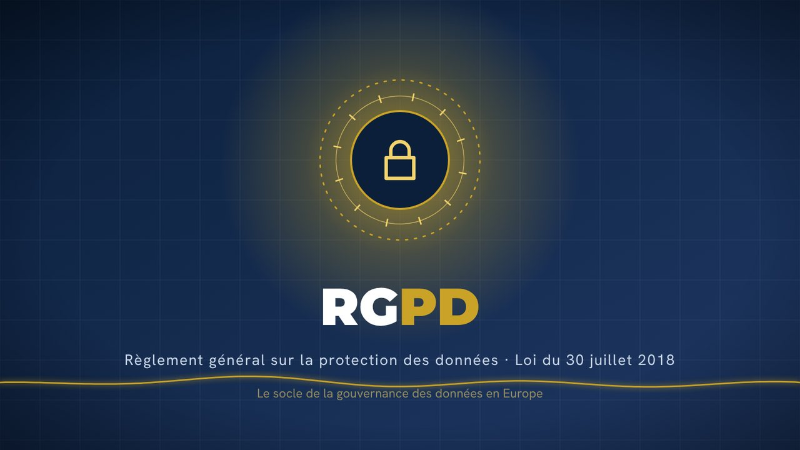

ARG
ARGARGOS › La réglementation en 4 minutes › RGPD
RGPD en 4 minutes: Ce qui est le plus sanctionné, c'est l'essentiel
Le RGPD est le socle de toute la gouvernance des données en Europe. Déclarer sa conformité ne suffit pas. Il faut pouvoir la prouver. On sanctionne surtout l'essentiel.

- 0:00Petites erreurs
- 0:11Les amendes
- 0:29Ce qui est sanctionné
- 0:45RGPD
- 0:54Ce qu'il exige
- 1:15Omnibus numérique
- 1:37Dates
- 1:55La chaîne
- 2:10En Belgique
- 2:26Que faire
Points clés
- 20 M€ ou 4 % du chiffre d'affaires mondial
- 25.5.2018 le RGPD s'applique
- 1.1.2026 règlement de procédure (UE) 2025/2518 en vigueur
- 2.4.2027 s'applique aux nouveaux cas transfrontaliers
- Fin 2027 objectif : simplification bouclée
- Sans base légale Traitements sans base claire
- Registre irréel Il ne reflète pas la réalité
- Conservation Données gardées trop longtemps
Transcription
Texte complet de la voix off
0:00 · Petites erreurs
Un e-mail envoyé au mauvais destinataire. Une sauvegarde que personne n'a effacée. Des données hors d'Europe. En apparence anodin. Jusqu'à la plainte.
0:11 · Les amendes
Le règlement général sur la protection des données s'applique depuis 2018. Ses amendes vont jusqu'à vingt millions d'euros ou quatre pour cent du chiffre d'affaires mondial. En Belgique, il est complété par la loi du 30 juillet 2018. Et c'est l'Autorité de protection des données qui contrôle.
0:29 · Ce qui est sanctionné
On sanctionne surtout l'essentiel. Des traitements sans base légale claire. Un registre qui ne reflète pas la réalité. Des données conservées trop longtemps. Des sous-traitants sans contrôle. Et une sécurité qui n'existe que sur le papier.
0:45 · RGPD
Le RGPD est le socle de toute la gouvernance des données en Europe. Déclarer sa conformité ne suffit pas. Il faut pouvoir la prouver.
0:54 · Ce qu'il exige
Ce qu'il exige aujourd'hui. Une base légale et de la transparence pour chaque traitement. Un registre et, en cas de risque élevé, une analyse d'impact. La protection dès la conception, et un contrat avec chaque sous-traitant. Et notifier les violations sous 72 heures. Les transferts hors de l'EEE, toujours avec des garanties.
1:15 · Omnibus numérique
Ce qui arrive : l'Omnibus numérique, encore en négociation. Il toucherait à la notion de donnée personnelle, mais le Conseil freine. Il reconnaîtrait l'intérêt légitime pour l'IA. Et seules les violations à haut risque seraient notifiées, sous 96 heures. Mais ce n'est pas la loi : aujourd'hui, le RGPD s'applique tel quel.
1:37 · Dates
Les dates clés. 25 mai 2018 : le RGPD s'applique. 1er janvier 2026 : le nouveau règlement de procédure entre en vigueur. 2 avril 2027 : il s'applique aux nouveaux cas transfrontaliers. Et fin 2027 : la simplification bouclée.
1:55 · La chaîne
Chaque maillon a son rôle. Le fabricant : la protection dès la conception. Le grossiste : les contrats de support. L'intégrateur : mesures et sous-traitants. Et le client final : bases légales, registre, analyses d'impact.
2:10 · En Belgique
En Belgique, l'Autorité de protection des données veille au respect du RGPD. Elle traite surtout des plaintes individuelles. Elle peut déjà agir sur les systèmes d'IA, par le RGPD. Et elle reste compétente pour les données personnelles dans le Data Act.
2:26 · Que faire
Que faire maintenant. Respecter le RGPD actuel, maîtriser les violations de données et sécuriser l'entraînement de l'IA. ARGOS le prouve, au lieu de le déclarer : un registre réel, des analyses d'impact et une preuve par mesure. RGPD : être conforme, c'est pouvoir le prouver.
Questions fréquentes
Qu’est-ce que RGPD ?
Le RGPD est le socle de toute la gouvernance des données en Europe. Déclarer sa conformité ne suffit pas. Il faut pouvoir la prouver. Le règlement général sur la protection des données s'applique depuis 2018. Ses amendes vont jusqu'à vingt millions d'euros ou quatre pour cent du chiffre d'affaires mondial. En Belgique, il est complété par la loi du 30 juillet 2018. Et c'est l'Autorité de protection des données qui contrôle.
Qu’exige RGPD ?
Ce qu'il exige aujourd'hui. Une base légale et de la transparence pour chaque traitement. Un registre et, en cas de risque élevé, une analyse d'impact. La protection dès la conception, et un contrat avec chaque sous-traitant. Et notifier les violations sous 72 heures. Les transferts hors de l'EEE, toujours avec des garanties.
Quelles sont les dates clés ?
Les dates clés. 25 mai 2018 : le RGPD s'applique. 1er janvier 2026 : le nouveau règlement de procédure entre en vigueur. 2 avril 2027 : il s'applique aux nouveaux cas transfrontaliers. Et fin 2027 : la simplification bouclée.
Quelle est la situation en Belgique ?
On sanctionne surtout l'essentiel. Des traitements sans base légale claire. Un registre qui ne reflète pas la réalité. Des données conservées trop longtemps. Des sous-traitants sans contrôle. Et une sécurité qui n'existe que sur le papier. En Belgique, l'Autorité de protection des données veille au respect du RGPD. Elle traite surtout des plaintes individuelles. Elle peut déjà agir sur les systèmes d'IA, par le RGPD. Et elle reste compétente pour les données personnelles dans le Data Act.
Que doit faire une entreprise dès maintenant ?
Que faire maintenant. Respecter le RGPD actuel, maîtriser les violations de données et sécuriser l'entraînement de l'IA. ARGOS le prouve, au lieu de le déclarer : un registre réel, des analyses d'impact et une preuve par mesure. RGPD : être conforme, c'est pouvoir le prouver.
Sources officielles
- Règlement (UE) 2016/679 (GDPR) (EUR-Lex)
- Autorité de protection des données (APD)
- Fiches réglementaires de Software in a Box
À voir aussi
 EHDS
EHDSEHDS en 4 minutes: Pour les hôpitaux et les fabricants
 Règlement sur l'IA
Règlement sur l'IARèglement sur l'IA en 4 minutes: Belgique : application directe, loi en attente
 NIS2
NIS2NIS2 en 4 minutes: Belgique : le bon élève
Voix et musique générées par intelligence artificielle (art. 50 du règlement sur l’IA). Information générale, pas un conseil juridique ; situation à novembre 2026, d’après les fiches réglementaires de Software in a Box. Clips vidéo sous licence Envato.
Pour intégrer cette présentation sur un autre site : <iframe src="https://argos.softwareinabox.eu/fr-be/reglementation/rgpd/presentacion/?embed=1" width="960" height="540" allow="autoplay; fullscreen" title="RGPD en 4 minutes: Ce qui est le plus sanctionné, c'est l'essentiel"></iframe> avec un lien vers cette page.
Aussi disponible en: EspañolDeutschFrançaisItalianoNederlandsNederlands (België)PortuguêsDansk